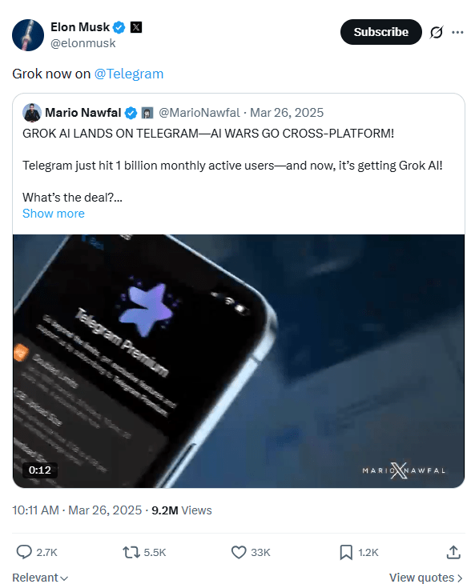
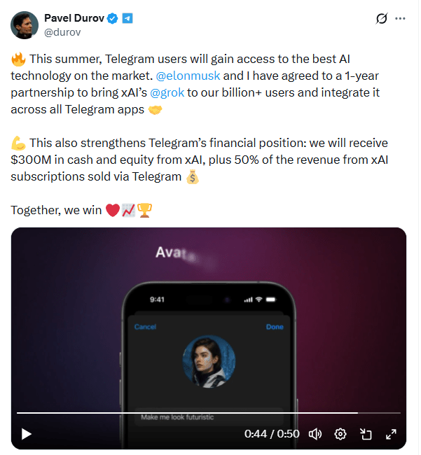
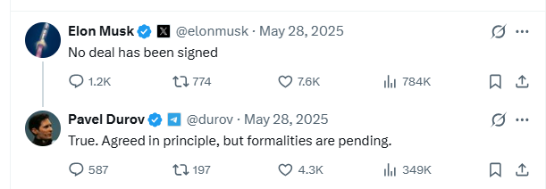
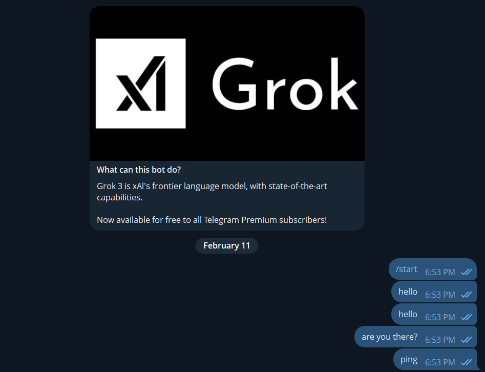
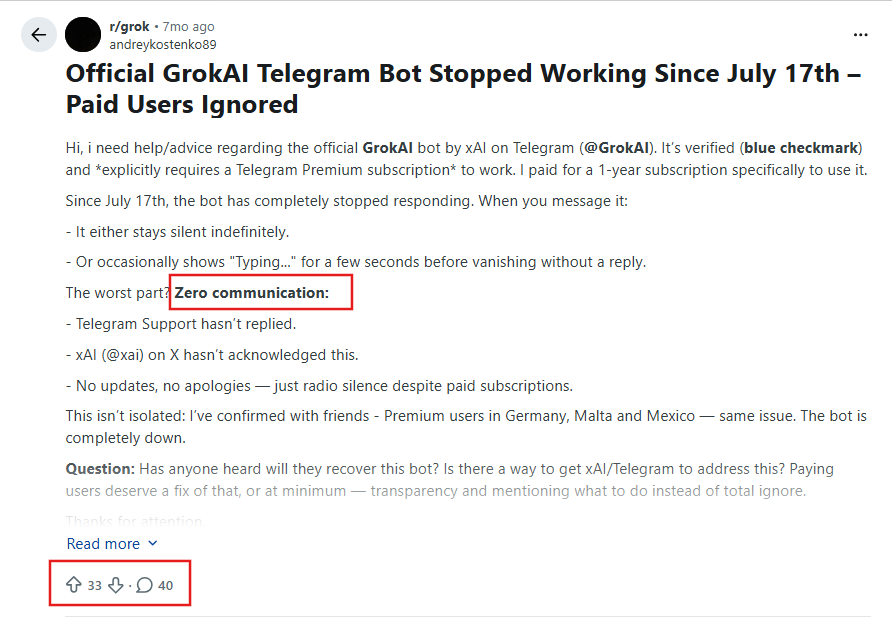
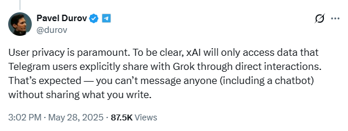
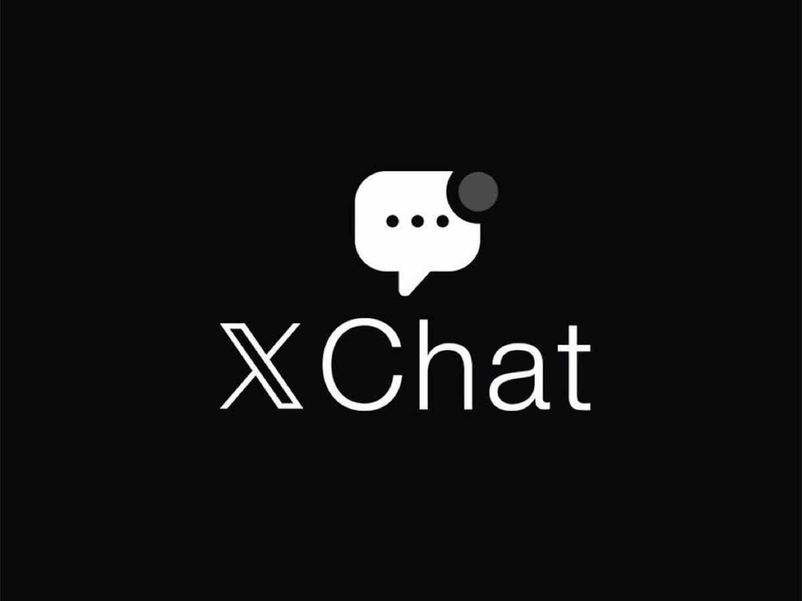
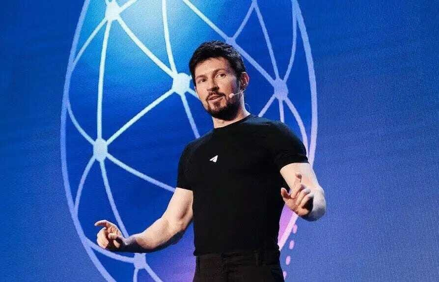

История вокруг Grok, Telegram и публичных заявлений
Аналитический материал на основе открытых источников. Это не официальная позиция Telegram, xAI или их представителей.
26 марта 2025: запуск Grok в Telegram анонсирован
26 марта 2025 года Илон Маск анонсировал запуск Grok в Telegram.

К тому моменту Telegram достиг отметки в 1 миллиард пользователей. Экспансия на такую аудиторию должна была усилить позиции Grok и одновременно популизировать Telegram. По всем признакам, планы были амбициозными: бот должен был работать не только в личных чатах, но и в группах и каналах; помогать в модерации; делать саммари PDF-файлов и длинных сообщений; и закрывать много прикладных сценариев.
Через 2 месяца: публичные расхождения в заявлениях
Спустя два месяца Павел Дуров сообщил о предполагаемом соглашении с xAI сроком на один год. По его словам, Telegram должен был получить 300 млн долларов наличными, а также 50% дохода от подписок xAI, оформленных через Telegram.
В тот же день Илон Маск публично заявил, что формулировка сделки не соответствует действительности. После этого последовали дополнительные разъяснения со стороны Telegram. Несмотря на возникшие разногласия, бот был запущен, однако доступ к нему получили только пользователи Telegram Premium.


Начало технических проблем
В начале сентября 2025 года пользователи начали сообщать о перебоях в работе бота. Позднее появились сообщения о том, что сервис стал недоступен.
Аккаунт @GrokAI в Telegram остаётся доступным, однако, по
сообщениям пользователей, бот перестал отвечать на запросы.


Что могло послужить причиной?
Официального подробного объяснения опубликовано не было. Стороны не представили публичного анализа ситуации.
Среди обсуждаемых версий — разногласия по финансовым условиям, репутационные последствия публичных заявлений и возможный стратегический фокус xAI на развитии собственной экосистемы.
Почему версия о приватности может быть неполной
В публичных обсуждениях выдвигалась версия, что ключевым фактором стали требования Telegram к защите данных и анонимности пользователей.
Однако Grok уже некоторое время работал в Telegram. Поэтому некоторые наблюдатели считают, что одних только вопросов приватности могло быть недостаточно для такого развития событий.

Контекст: развитие собственной экосистемы
Илон Маск публично заявлял о планах развития XChat. Интеграция Grok в собственную платформу могла бы усилить её позиции и создать дополнительное конкурентное преимущество.
В этом контексте логичным выглядит фокус на развитии собственной экосистемы, а не на долгосрочной интеграции с внешним мессенджером.

Параллельные инициативы Telegram
В тот же период Павел Дуров анонсировал проект Cocoon — инициативу по развитию ИИ-инфраструктуры на базе TON.
Концепция предполагает распределённую модель: участники предоставляют вычислительные ресурсы и получают вознаграждение в TON, а разработчики размещают модели и оплачивают использование инфраструктуры.

Что если все равно нужен Grok в Telegram?
Когда стало понятно, что официальная версия не работает, я проверил альтернативы и не нашел действительно стабильного рабочего варианта. Поэтому написал собственного бота — сначала для личного использования, а затем развил его в полноценный проект.
Попробовать можно здесь: t.me/grok_ai_telegram_bot
@grok_ai_telegram_bot
Выводы
История с Grok в Telegram началась громким анонсом, но завершилась без подробных публичных разъяснений.
Были ли причиной финансовые разногласия, стратегические решения или совокупность факторов — достоверной информации представлено не было.
Как вы оцениваете развитие этой ситуации?